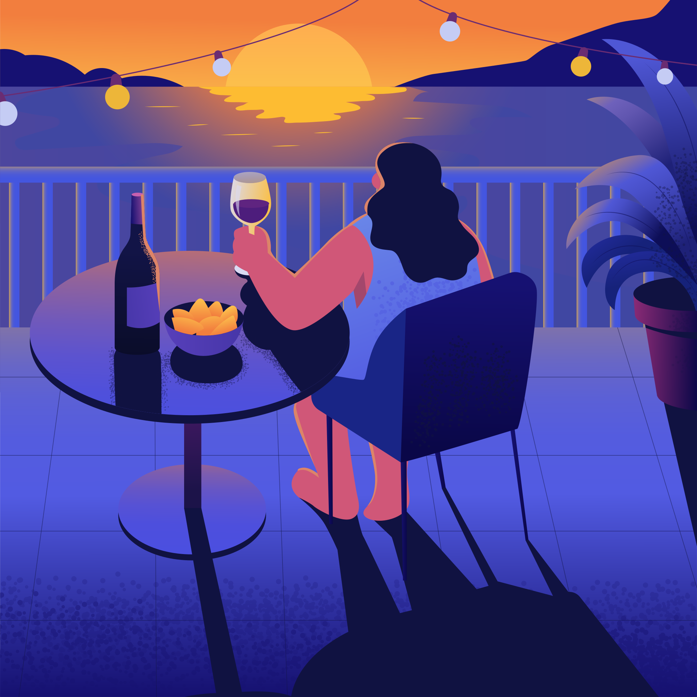
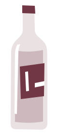

Mark and masthead
 Rebstock
RebstockActual header size · 32 × 38px
At the sizes used in the app

The complete approved bottle set





The cut-paper grapevine and Spacepixel Creative’s wine-on-a-balcony illustration, using the app’s production SVG files.
RebstockActual header size · 32 × 38px

